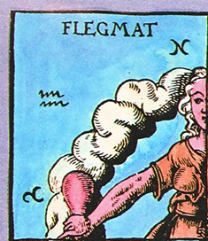
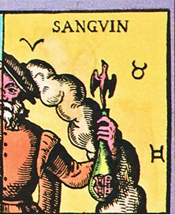
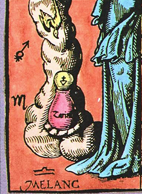
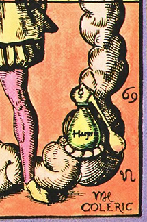
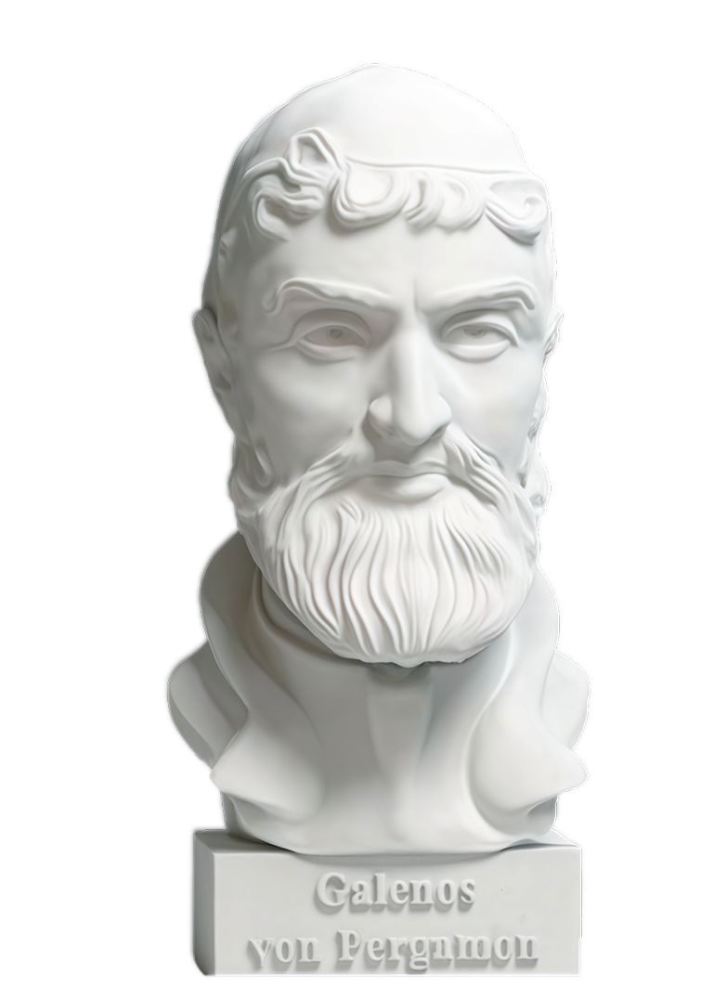
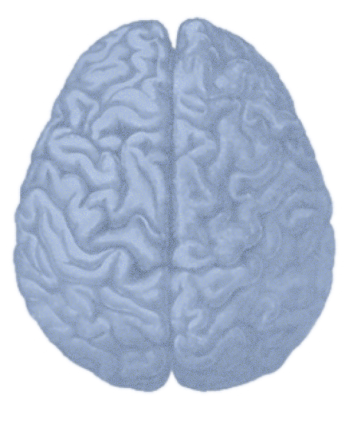

.png)


.png)
.png)
.png)


.png)
.png)






Исследование темперамента началось еще в древнем мире. Древнегреческий философ и врач Гиппократ, живший в V веке до нашей эры, был одним из первых, кто предложил классификацию типов людей. Он считал, что в каждом организме свой баланс четырех жизненных соков или «гуморов»: крови, желчи, черной желчи и слизи.
Он считал, что в каждом организме свой баланс четырех жизненных соков или «гуморов»: крови, желчи, черной желчи и слизи. Эти вещества определяют характер человека, его поведение и предрасположенность к заболеваниям.
Римский философ и врач Гален (II век нашей эры) развил теорию Гиппократа и создал более детальную классификацию. Гален выделяет девять типов темперамента: по четыре простых и смешанных, один — «наилучший», соразмерный, зависящий от всех четырех качеств. Именно Гален создал типологию темперамента, описывающую поведение — Гиппократ до него искал причины возникновения болезней.
Результатом изысканий этих двух учёных стали четыре основных темперамента, которые мы знаем теперь: сангвинический, холерический, флегматический, меланхолический. В течение многих столетий эта классификация оставалась основной и широко использовалась в медицине, психологии и философии.
Со временем научные представления об основах темперамента изменялись. В XVIII–XIX веках немецкий философ Иммануил Кант и русский физиолог И. П. Павлов предложили свои подходы к изучению и классификации. Кант делил четыре темперамента на две группы. По его мнению, сангвиниками и меланхоликами всегда руководят чувства, а холериками и флегматиками — действия.
.png)
.png)
Теория нейрофизиологического характера — взаимосвязь темпераментных типов с нервной системой. Согласно этой теории, специфические свойства деятельности условно-рефлекторного характера и темперамент, обуславливаемые совокупностью особенностей нервной системы, понимаются как тип высшей нервной деятельности (ВНД), согласно ученому И.П. Павлову.
.png)
.png)
.png)
В XX веке произошел значительный прорыв в изучении темперамента. Психологи начали применять новые научные методы исследования, опираясь на статистический анализ и эксперименты. В результате возникли новые классификации и теории. В 1963 году была разработана первая версия опросника Ганса Айзенка, направленная на изучение характеристик темперамента.
Теория четырех темпераментов - это предпсихологическая теория, которая предполагает, что существует четыре основных типа личности: сангвиник, холерик, меланхолик и флегматик. Большинство формулировок включают в себя возможность смешения типов личности, при котором типы личности индивида частично совпадают и в них присутствуют два или более темперамента.


Современная медицина не определяет четкой взаимосвязи между внутренними секрециями и личностью, хотя некоторые психологические типологии личности используют категории, схожие с греческими темпераментами.


В 2022 году было выявлено первичное воздействие на каждый квадрант новой коры головного мозга (правый передний создает, правый задний связывает, левый задний анализирует и левый передний принимает решения). Таким образом, непреднамеренно была создана объединяющая модель большинства других моделей, связанных с темпераментом, типами личности и социальными ролями, а также стилями обучения и многим другим.
Ганс Юрген Айзенк.
Немецко-британский учёный-психолог


vk.com/vhutein